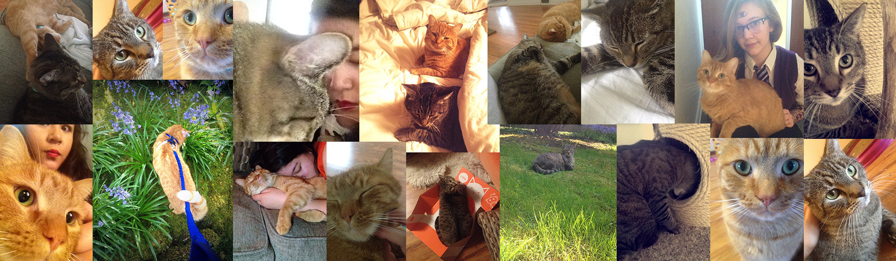

Chelsea Dover
Hello, I'm Chelsea! I'm a pop culture nut, Ravenclaw, and lover of all animals(especially my cats). I run a few fanpages with my sister, but my first and most popular one is "Sherlock, The Mess You've Made"; we have over 20 thousand likes and 16 admins. I'm part of an online community as well with over 30 people from all over the world. It started out as an admin contest for my one of my fan pages but we all fell in love with each other so we made a chat to keep in touch- That was more than a year ago and we're still going strong!
It's "why are you a Montague" not "where are you Romeo"
Things I enjoy
- Fandoms
- Activities
- Doctor Who
- Sherlock
- Night Vale
- TFIOS
- LOTR/THe Hobbit
- The Walking dead
- Rent
- TFIOS
- Game of Thrones
- Harry Potter
- and many many more...
- Admining pages
- Being graced with my cat's presence
- reading
- hiking
- pretending/tring to be good at art
- Day dreaming about owning a miniature horse named Fwankie